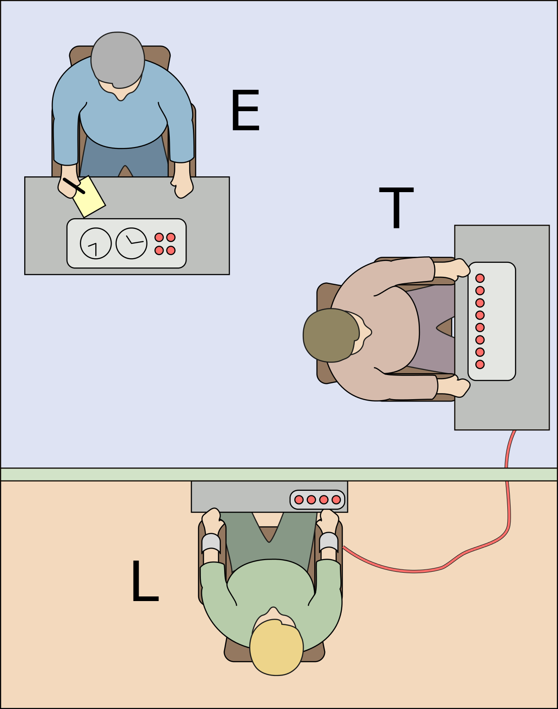

Expérience de Milgram
L'expérience de Milgram est une expérience psychologique publiée en 1963 par Stanley Milgram permettant d'évaluer le degré d'obéissance à l'autorité d'un individu qu'il juge légitime. Cette expérience peut permettre de démontrer dans un contexte d'après guerre, comment sous un ordre hiérarchique, des humains on pu tuer et torturer d'autres humains. Elle permet ainsi de d'analyser le processus de soumission à l'autorité, même si cela pose des problèmes de conscience au sujet. Cette expérience est très controversée, l'opinion publique mais aussi le milieu de la psychologie, la philosophie et les sciences estiment que l'expérience de Milgram pose des problèmes d'éthiques et de moral. Elle a également été lourdement critiqué pour sa validité et sa qualité, aujourd'hui la majorité des expériences tentent de ne plus tromper leurs participants, mais voyons en quoi consiste l'expérience de Milgram.
Protocole
 3 individus sont présents, le participant et deux scientifiques, le premier va s'installer sur une chaise et se connecter à un dispositif d'éléctrochocs. L'expérience peut alors commencer, le participant lit un questionnaire à la personne sur la chaise et à chaque mauvaise réponse il lui inflige un courant éléctrique augmentant de 15 Volts à chaque nouvelle décharge. La personne sur la chaise simule en réalité la douleur, le participant, entend ses hurlements et commence alors à vouloir arrêter d'infliger des décharges, c'est là qu'intervient l'autre scientifique. Il demander au participant de continuer pour le bien de l'expérience avec des phrases du genre « Veuillez continuer s'il vous plaît. », « L'expérience exige que vous continuiez. », « Vous n'avez pas le choix, vous devez continuer. », « Il est absolument indispensable que vous continuiez. ». On voit ici que la plupart des requêtes du scientifique sont des ordres, les décharges vont alors ammener le scientifique sur la chaise à crier de plus en plus fort jusqu'au silence, et à sa mort déguisé. Après cette expérience, Milgram avouait le supterfuge, en rassurant le participant sur ce qu'il venait de ce passé et le fait que c'est un comportement tout à fait normal.Resultats et Impacts:
Au final 62.5% des volontaires ont effectué des décharges blessant ou tuant le scientifique afin de correctement faire le travail demandé. Cette expérience montre que n'importe qui peut commettre les pires atrocités si une autorité lui ordonne. Les conséquences peuvent être difficiles à accepter, cela montre l'obéissance humaine inconditionelle à l'autorité, cette soumission à plusieurs explications :Chercheur et lien pour en savoir plus: